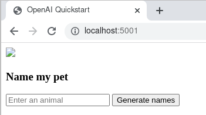

Introduction
The quickstart page on the OpenAI website covers how to set up a connection to the ChatGPT API using Python. However, it does not explain how to replicate this same workflow using Docker, which would be useful for reproducibility purposes. We explain how to perform this same workflow using Docker.
Setting up access to the ChatGPT API
The website for setting up accessing to the ChatGPT API (https://platform.openai.com/) is not the same as the website for accessing OpenAI’s ChatGPT UI (https://chat.openai.com/). It is also worth noting that billing for the ChatGPT UI is not the same as the billing associated with the ChatGPT API. ChatGPT Plus, which currently uses GPT-4, currently costs $20/month. The ChatGPT API currently costs $0.002/1000 tokens.
Using the ChatGPT API link given above, after logging in, click on the top right and go to “Manage Account.” Click “Billing” on the left toolbar. You must have a payment method in your account in order to use the ChatGPT API. Once you have a payment method included, you may go to the OpenAI quickstart tutorial and you should be able to click through the examples without any issues.
Setting up the Docker container
I am using WSL2 and Ubuntu with the Docker CLI. In brief, to set these up, you will need to enable Hyper-V using PowerShell, enable containers using PowerShell, and enable virtualization. Then WSL2 can be installed and then one can follow the Docker installation instructions.
Continue to follow the quickstart tutorial until after the API key is created. You should have cloned OpenAI’s Git repository, and included your secret API key in an .env file.
With thanks to guidance from Turner-Trauring, we can use the following Dockerfile and add to the Git repository:
FROM python:3.11.3
ENV VIRTUAL_ENV=/opt/venv
ENV PIP_ROOT_USER_ACTION=ignore
ENV FLASK_ENV=development
RUN python3 -m venv $VIRTUAL_ENV
ENV PATH="$VIRTUAL_ENV/bin:$PATH"
COPY requirements.txt .
COPY app.py .
COPY templates ./templates
COPY .env .
RUN pip install --upgrade pip
RUN pip install -r requirements.txt
CMD ["flask", "run", "--host", "0.0.0.0"]
To avoid errors with pip, I changed the numpy line of requirements.txt to
numpy==1.22.0
Docker command execution
First, be sure that the file /etc/resolv.conf has the correct DNS configuration for your purposes. See this link. Your correct DNS can be found by navigating to your Command Prompt, running ipconfig -all and looking for the value next to Default Gateway. The file /etc/resolv.conf is a read-only file, and if you use vi or vim to edit it, you will need to use :w !sudo tee % to edit the file after making the change (see this link).
In WSL2, navigate to the directory in which the Git repository is located. Run the command
docker build -t chatgpt:1 .
This creates a Docker image based on the Dockerfile, tagging it with the name chatgpt:1. Pandas, in particular, will take a long time to install.
Then, one can execute the command
docker run -p 5001:5000 chatgpt:1
The following will appear:
* Serving Flask app 'app' (lazy loading)
* Environment: development
* Debug mode: on
* Running on all addresses.
WARNING: This is a development server. Do not use it in a production deployment.
* Running on http://172.17.0.2:5000/ (Press CTRL+C to quit)
* Restarting with stat
* Debugger is active!
* Debugger PIN: 336-956-833
In a new command prompt window, open WSL2 again and if you don’t have a web browser installed already, install one. (I use Google Chrome in Ubuntu.) In your web browser, navigate to the address localhost:5001. This will yield the following window.

I typed in the word “dog” before clicking the “Generate names” button.

ChatGPT suggested the names “Super Sniffer,” “Captain Paws,” and “The Bark Knight.” You can then move on to the remainder of the quickstart page provided by OpenAI.